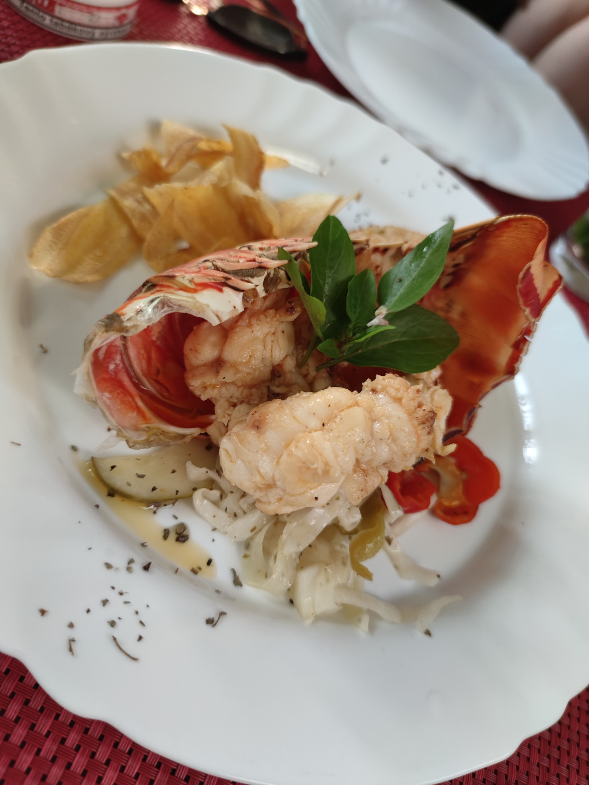
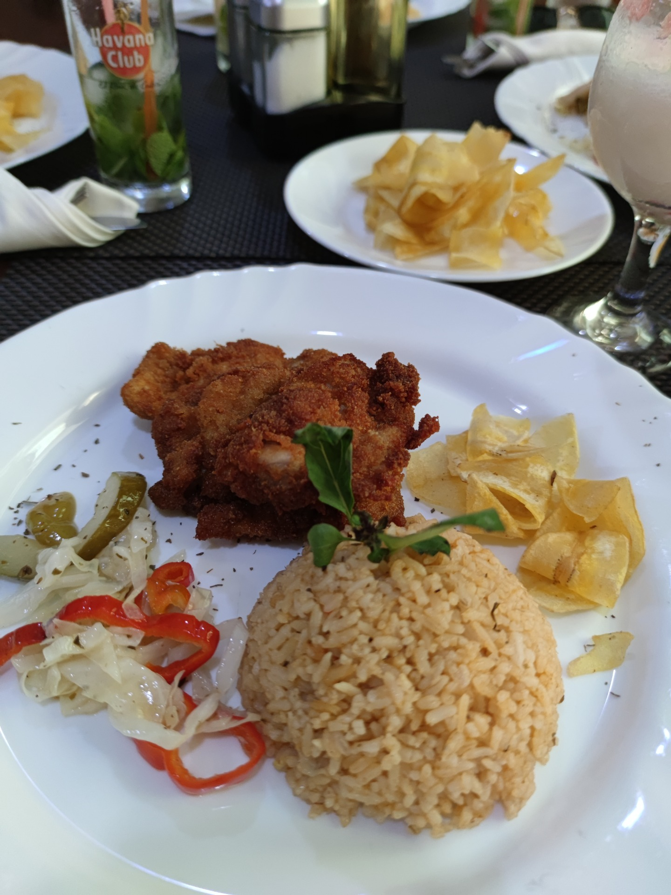

SPOLU NA CESTÁCH
05.07.2022
Mesto plné histórie, výborné drinky a neuveriteľné banana chips.
Takmer po 10 hodinovom lete z Francúzska, sme finálne doleteli do krajiny rumu, miešaných drinkov, cigár a naozaj veľmi priateľských ľudí. Asi takto by som v skratke opísala Kubu.
Najskôr sme na letisku museli prejsť kontrolou, kde sme sa preukázali vízom (turistická karta) a certifikátom očkovania na Covid-19 (prípadnou imunitou po prekonaní). Následne nám znova kontrolovali batožinu. Po celkovej kontrole na letisku na nás už ´´číhala´´ zmenáreň, kde sme si šli zmeniť peniaze. Detailne som to vysvetlila v predchadzajúcom článku Kubánske peso - sú tam všetky dôležité informácie, ktoré sme sa dozvedeli ohľadom ich meny.
Najskôr sme sa chceli ubytovať do vopred zarezervovaného ubytka, ktoré sme hľadali cez AIRBNB - cenovo to vychádza výhodnejšie ako hotel a zároveň máte možnosť bližšie nahliadnuť do života miestnych (tí sú naozaj veľmi láskaví, takže to vrelo odporúčam). Z letiska nie je žiaden problém k presunu - stojí tam veľa taxikárov. Cestou sa k nám pán taxikár prihovoril a zároveň nám ponúkol zmenu peňazí - takže existuje aj táto možnosť. Na ubytku nás už čakali majitelia a vysvetlili všetko potrebné. Inak ubytko :
Po ubytovaní sme šli preskúmať mesto. Najskôr sme šli uličkami centra - tam sme sa hneď aj najedli. Zrejme by sme si neodpustili, ak by sme hneď neskúsili miestnu kuchyňu. Napríklad pre nás dosť nezvyčajná, no pre nich typická ryža s čiernou fazuľou - bola prekvapivo výborná.
Určite mi nedá nespomenúť miestne banana chips.Natrafili sme na ne náhodne v centre mesta. Mysleli sme si, že sú to vyprážané zemiaky, pretože keď nám ich podával, spýtal sa, či ich chceme posoliť. Neskôr sme však zistili, že jeme vyprážaný banán 😃. Sú to teda ich divoké banány, ktoré robia na sladko i slano. Často aj ako príloha k jedlu.
|  |  |
Zaujímavosti:
Miesta, ktoré sme stihli pozrieť